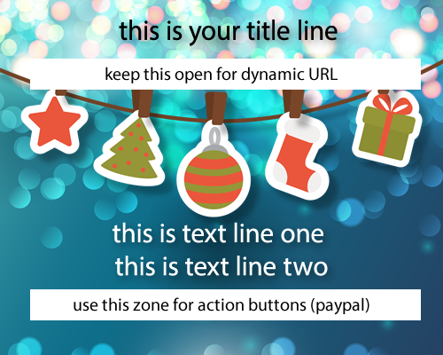

Javascript/jquery popup windows for Weebly
t: @orsusvirtum
(c) June 2014
Original Credits
jQuery Reveal Plugin 1.0
Copyright 2010, ZURB
Free to use under the MIT license
Weebly Installation Instructions
1. Upload the following files to your weebly website (Design -> HTML -> add files):
jquery-1.4.4.min.js
jquery-reveal.js
modal-gloss.png
2. Follow all instructions inlined inside weebly-popup.css, jquery-reveal.js and weebly.html
3. The file modal-gloss.png is the visual for your popup. You may modify it according to your own specs with Adobe Fireworks, Illustrator or Photoshop.
